Sexta 11 e sábado 12 de setembro de 2026, em Paulínia e Piracicaba. Vai na loja, segue no Insta, posta e marca — leva um cookie, um voucher pra voltar, e concorre ao combo do melhor stories. Esta página é a perna de Paulínia: é para ela que o vídeo e os influenciadores foram levantados. O briefing e as duas mecânicas novas valem para as duas lojas.
Dois dias dando cookie na loja de Paulínia em troca de um story. Não é distribuição de brinde: o cookie compra a primeira visita, e o voucher é que compra a segunda. Sem a segunda visita, a campanha entregou fila e nada mais — foi isso que ela custou R$ 5 mil pra descobrir.
A régua de julgamento é a mesma de qualquer ação de loja: faturamento = pessoas × frequência × ticket. Esta ação move pessoas nos dois dias e aposta em frequência no retorno do voucher. Ticket ela não move — e não deveria tentar.
Sete passos, do momento em que a pessoa entra até ela sair com três coisas na mão: o cookie, o voucher e a inscrição no sorteio. Os passos em vermelho ainda não estão fechados.
Sexta 11 e sábado 12 de setembro, dentro do horário normal (seg a sáb, 11h às 20h). Presencial — não vale delivery nem iFood.
O seguidor é o ativo que sobra depois que a campanha acaba. Hoje a conta tem 5.934 seguidores — esse número no dia 10/09 é a linha de base contra a qual medir o ganho.
O modelo de Campinas pedia: seguir a loja + postar story marcando a loja e o influenciador. Marcar o influenciador é o que faz a audiência dele ver que a promoção é real — mas dobra a exigência na fila.
Este é o passo que quebra na prática. A mecânica está fechada; o que não está escrito é o que fazer quando ela falha. Sem isso no papel, cada atendente decide diferente e a promoção vira briga de balcão.
No modelo de Campinas era um sabor fixo (o Choc), limite de 1 por pessoa, com CPF informado. Fixar o sabor é o que protege o estoque e a fila.
Todo mundo que participar sai com um voucher pra voltar outro dia e ganhar um benefício. É a única ponte entre os dois dias de fila e a segunda visita. O benefício ainda não foi escolhido — a aba “Voucher de volta” tem as opções com o custo de cada uma.
Quem estiver na loja nos dois dias concorre a um combo da casa pelo melhor stories. Precisa de um display de balcão com o combo à mostra, senão ninguém fica sabendo. A aba “Melhor Stories” tem o que falta fechar.
Vai na loja, segue no Insta, posta e marca, leva um cookie e um voucher pra próxima. Isso está fechado desde o briefing original.
O que falta escrever é o que fazer quando a mecânica falha na fila — o passo 4 do fluxo acima. Enquanto não estiver escrito, a equipe decide na hora, e cada uma decide diferente.
O valor está definido. O que não está é como ele foi dimensionado: quantos cookies dá, quanto vai pra influenciador, quanto sobra pra imprevisto, e qual o teto se a fila passar do previsto.
O formato está definido: uma página de indicação da cidade + dois influenciadores. Os nomes não estavam — a aba Influenciadores traz os candidatos de Paulínia com o alcance real de cada um, medido nos últimos 24 posts.
Quem manda na loja nos dois dias, quem tira dúvida da equipe e quem decide se algo sair do previsto. Se a resposta for “a Débora”, a campanha não conta como transferida mesmo que dê certo — é o critério do projeto de independência.
Quanto custou, de verdade, cada cookie dado: produto, rateio da verba e o desconto do voucher na volta. Esta linha depende do DRE por loja — sem margem por loja, a campanha vai ser julgada por movimento e não por resultado.
Reel do @comendoporcampinas sobre a mesma promoção na loja de Campinas, em abril de 2025. É o vídeo que o Fred vai refazer para Paulínia — por isso ele está aqui inteiro, com a transcrição, o mapa dos 19 cortes e os 151 frames. Abrir o post original no Instagram →
O perfil tem 552.590 seguidores e a mediana dos 24 últimos posts é de 94.159 views. Ou seja: os 107 mil deste reel são um resultado normal para o canal, não um estouro. O que dá pra copiar aqui é a construção, não a sorte — e é bom saber disso antes de esperar 107 mil views num perfil de Paulínia.
37,8 s divididos em 19 planos. Média de 2,0 s; o mais curto tem 1,0 s (o de abertura) e o mais longo 3,6 s (a panorâmica que dá o endereço). Todos os cortes são secos — não há uma transição no vídeo inteiro. Clique numa caixinha para ver o plano.
Plano médio dentro da loja: a criadora empurra um prato branco com seis cookies em direção à lente; ela fica desfocada atrás, balcão e parede ao fundo.
Na mão, praticamente parada. O produto ocupa o terço de baixo do quadro.
O gancho é visual e verbal ao mesmo tempo — o letreiro COOKIE DE GRAÇA já está no ar no frame 1, antes de qualquer palavra ser dita.
E esse lugar tem um dos melhores cookies de Campinas e vai dar um na faixa pra vocês.
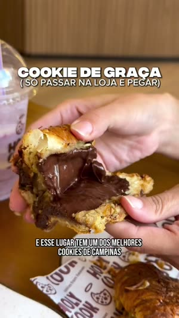
Close de uma mão segurando um cookie partido ao meio, recheio de chocolate à mostra. Milkshake e croissant desfocados no fundo.
Mão, micro-movimento, sem zoom.
Prova de produto no segundo 1. Não há build-up: o apetite entra antes da explicação.
E esse lugar tem um dos melhores cookies de Campinas e vai dar um na faixa pra vocês.
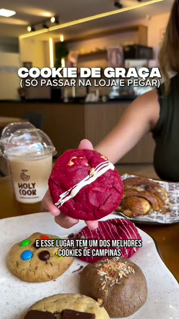
Cookie red velvet erguido na mão, copo Holy Cook atrás; a mão desce o cookie até apoiá-lo na bancada com os outros.
Acompanha a descida da mão, movimento vertical.
Entra a promessa (“e vai dar um na faixa pra vocês”). O letreiro do topo morre no corte seguinte.
E esse lugar tem um dos melhores cookies de Campinas e vai dar um na faixa pra vocês.
Casal em frente ao balcão: ele estende o cookie quase encostando na lente, ela ao lado sorrindo e fazendo joinha. Letreiro HOLY COOK atrás.
Selfie de braço estendido, grande-angular.
Primeira aparição de rosto. É o que dá crédito de gente de verdade — e é curto de propósito.
E esse lugar tem um dos melhores cookies de Campinas e vai dar um na faixa pra vocês.
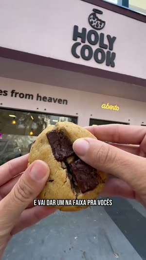
Mão segurando o cookie partido, com a fachada rosa (HOLY COOK · cookies from heaven · aberto) ocupando o topo do quadro.
Contra-plongée leve, aproximando devagar.
Casa produto e marca no mesmo enquadramento. É o plano que prova onde é, sem precisar dizer.
E esse lugar tem um dos melhores cookies de Campinas e vai dar um na faixa pra vocês. É sem pegadinha, galera. Passou na loja, ganhou.
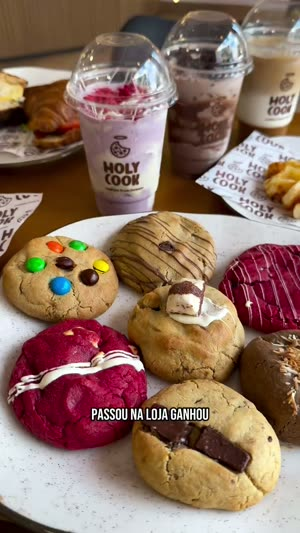
Prato com seis cookies, três milkshakes em copo da marca, batata/waffle ao lado, mesa de madeira.
De cima em diagonal, orbitando devagar.
Abundância, casada com a frase da regra: “passou na loja, ganhou”.
É sem pegadinha, galera. Passou na loja, ganhou. Essa é a Holy Cook, fica no Taquaral, de frente com o Colégio Liceu.
A loja vista de fora, céu azul, letreiro grande ocupando a faixa superior.
Contra-plongée, subindo e afastando devagar.
Primeira metade da localização.
Essa é a Holy Cook, fica no Taquaral, de frente com o Colégio Liceu.
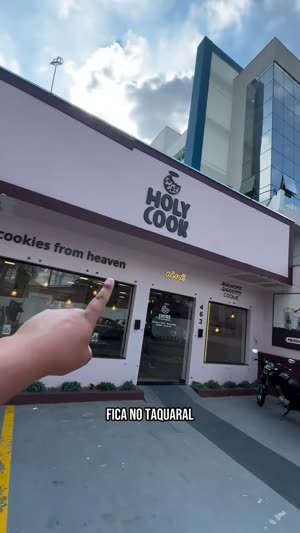
POV com o dedo apontando para a loja; a câmera panoramiza para a direita atravessando a rua até enquadrar o Colégio Liceu e a avenida.
Um único movimento panorâmico, sem corte. É o plano mais longo do vídeo (3,6 s).
É a referência de endereço. Longo de propósito: informação precisa de tempo, apetite não.
Essa é a Holy Cook, fica no Taquaral, de frente com o Colégio Liceu. E tem cookies um melhor que o outro.
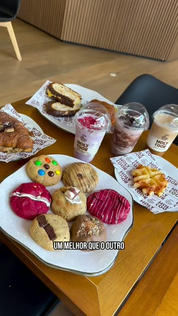
Mesma mesa, câmera mais alta, prato de cookies em primeiro plano e as bebidas ao fundo.
Leve aproximação.
Reabre o bloco de produto depois do bloco de localização — o vídeo volta pra comida assim que o endereço foi dito.
E tem cookies um melhor que o outro. Tem cookie lotado de recheio, croissant de cookies e até ovo de páscoa com casca de cookies.
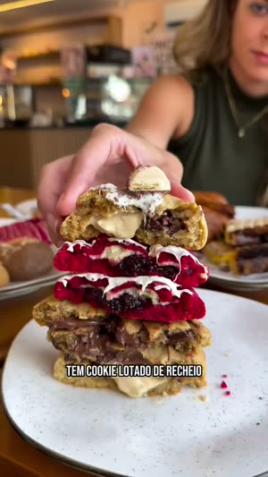
Quatro cookies empilhados com os recheios à mostra num prato; a criadora desfocada atrás encaixando a última peça.
Baixa, quase na altura da mesa, parada.
O plano-uau do meio. É o único momento em que o produto vira construção, não item.
Tem cookie lotado de recheio, croissant de cookies e até ovo de páscoa com casca de cookies.
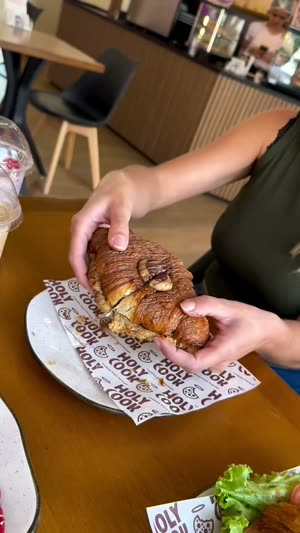
Duas mãos abrindo o croissant de cookie ao meio sobre o papel da marca.
Close, parada.
Mostra que a casa não é só de cookie.
Tem cookie lotado de recheio, croissant de cookies e até ovo de páscoa com casca de cookies.
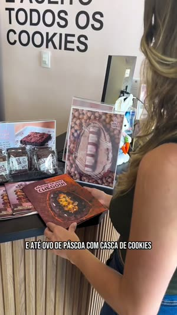
A mão pega o folheto PÁSCOA DA HOLY CHEGOU na frente do painel de fotos da loja e vai virando as páginas. O letreiro de parede TODOS OS COOKIES sai por cima do quadro conforme a câmera desce.
Desce e acompanha o folheto. Segundo plano mais longo (3,1 s).
O produto sazonal. É o slot que, em setembro, muda de conteúdo — Páscoa não existe mais.
Tem cookie lotado de recheio, croissant de cookies e até ovo de páscoa com casca de cookies. Galera, olha isso.
Corta e volta para o mesmo folheto, agora enquadrado inteiro e mais perto.
Parada.
É o “galera, olha isso”. Corte de reforço sobre o mesmo objeto — truque barato pra segurar atenção sem trocar de cenário.
Galera, olha isso. Além dos cookies, tem opções salgadas e várias bebidas maravilhosas.
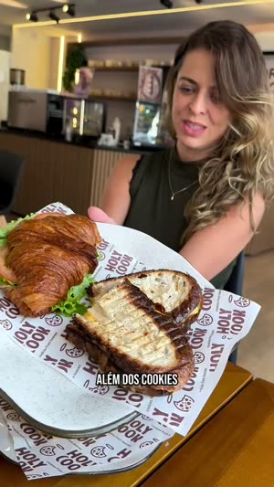
A criadora segura o prato com o croissant salgado cortado na frente da câmera; ela sorri, desfocada atrás.
Plano médio, parada.
Abre a categoria salgado.
Além dos cookies, tem opções salgadas e várias bebidas maravilhosas.
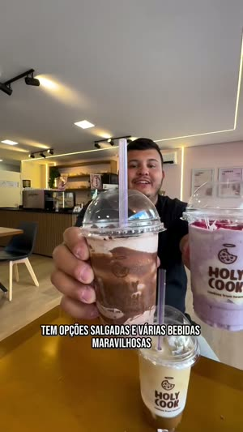
O criador segura dois milkshakes na frente do rosto, loja desfocada atrás.
Mesmo enquadramento do plano 14 — muda a pessoa e a categoria.
Rima de enquadramento, não plano novo. Dois planos gêmeos cobrem duas categorias em 4,4 s.
Além dos cookies, tem opções salgadas e várias bebidas maravilhosas.
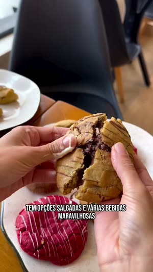
Duas mãos rasgando um cookie recheado na vertical e puxando o recheio.
Close, parada.
O plano mais apetitoso do vídeo está no CTA, não no gancho — é aqui que entra “manda pra quem vai com você”.
Além dos cookies, tem opções salgadas e várias bebidas maravilhosas. Então já manda pra quem vai com você e aproveita
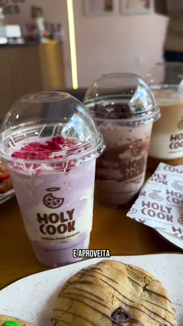
Câmera na altura da mesa: três copos enfileirados em profundidade, cookie desfocado em primeiro plano.
Desliza para a frente.
Respiro antes da data.
Então já manda pra quem vai com você e aproveita porque pra pegar esse cookie é só amanhã e sábado.
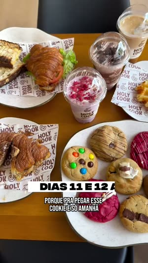
Plano de cima da mesa inteira, orbitando devagar.
Órbita lenta.
Único plano com cartela grande — DIAS 11 E 12 ABRIL. A informação que precisa ficar sozinha ganha o plano mais bonito.
porque pra pegar esse cookie é só amanhã e sábado. Ainda vai ter um sorteio de um ovo de Páscoa.
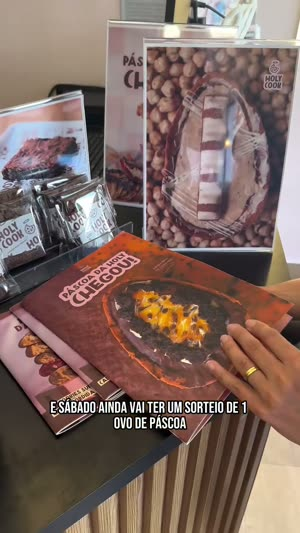
Balcão com os folhetos; a mão vira o cardápio rosa com as fotos dos produtos.
Parada.
Termina sem cartela de encerramento, sem logo e sem “siga a gente”. Quem fecha é o áudio.
Ainda vai ter um sorteio de um ovo de Páscoa.
Três colunas: o que o off diz (Whisper large-v3), o que a legenda mostra na tela (lido dos frames) e em que plano isso cai. Repare que as duas quase nunca coincidem em recorte — a legenda quebra em pedaços menores que a fala.
| Tempo | Legenda na tela | Off (áudio) | Plano |
|---|---|---|---|
| 0,00–3,50s | E ESSE LUGAR TEM UM DOS MELHORES COOKIES DE CAMPINAS | E esse lugar tem um dos melhores cookies de Campinas e vai dar um na faixa pra vocês. | 1–3 |
| 3,50–5,75s | E VAI DAR UM NA FAIXA PRA VOCÊS | E esse lugar tem um dos melhores cookies de Campinas e vai dar um na faixa pra vocês. | 3–5 |
| 5,75–7,75s | É SEM PEGADINHA GALERA | É sem pegadinha, galera. Passou na loja, ganhou. | 5 |
| 7,75–9,25s | PASSOU NA LOJA GANHOU | É sem pegadinha, galera. Passou na loja, ganhou. | 5–6 |
| 9,25–10,75s | ESSA É A HOLY COOK | Essa é a Holy Cook, fica no Taquaral, de frente com o Colégio Liceu. | 6–7 |
| 10,75–11,75s | FICA NO TAQUARAL | Essa é a Holy Cook, fica no Taquaral, de frente com o Colégio Liceu. | 7–8 |
| 11,75–14,25s | DE FRENTE COM O COLÉGIO LICEU E TEM COOKIES | Essa é a Holy Cook, fica no Taquaral, de frente com o Colégio Liceu. E tem cookies um melhor que o outro. | 8 |
| 14,25–15,75s | UM MELHOR QUE O OUTRO | E tem cookies um melhor que o outro. | 8–9 |
| 15,75–18,25s | TEM COOKIE LOTADO DE RECHEIO | E tem cookies um melhor que o outro. Tem cookie lotado de recheio, croissant de cookies e até ovo de páscoa com casca de cookies. | 9–11 |
| 18,25–19,75s | CROISSANT DE COOKIES | Tem cookie lotado de recheio, croissant de cookies e até ovo de páscoa com casca de cookies. | 11 |
| 19,75–22,75s | E ATÉ OVO DE PÁSCOA COM CASCA DE COOKIES | Tem cookie lotado de recheio, croissant de cookies e até ovo de páscoa com casca de cookies. Galera, olha isso. | 11–12 |
| 22,75–24,00s | GALERA OLHA ISSO | Galera, olha isso. Além dos cookies, tem opções salgadas e várias bebidas maravilhosas. | 12–13 |
| 24,00–24,75s | ALÉM DOS COOKIES | Além dos cookies, tem opções salgadas e várias bebidas maravilhosas. | 13–14 |
| 24,75–29,25s | TEM OPÇÕES SALGADAS E VÁRIAS BEBIDAS MARAVILHOSAS | Além dos cookies, tem opções salgadas e várias bebidas maravilhosas. | 14–16 |
| 29,25–31,25s | ENTÃO JÁ MANDA PRA QUEM VAI COM VOCÊ | Então já manda pra quem vai com você e aproveita | 16–17 |
| 31,25–32,25s | E APROVEITA | Então já manda pra quem vai com você e aproveita porque pra pegar esse cookie é só amanhã e sábado. | 17 |
| 32,25–34,50s | PORQUE PRA PEGAR ESSE COOKIE É SÓ AMANHÃ | porque pra pegar esse cookie é só amanhã e sábado. | 17–18 |
| 34,50–37,80s | E SÁBADO AINDA VAI TER UM SORTEIO DE 1 OVO DE PÁSCOA | porque pra pegar esse cookie é só amanhã e sábado. Ainda vai ter um sorteio de um ovo de Páscoa. | 18–19 |
Os tempos da legenda têm precisão de ±0,25 s (é o intervalo entre os frames extraídos). Os tempos do off vêm dos segmentos do Whisper.
Três camadas, e só uma delas fica o vídeo inteiro. Esta é a parte que mais engana quem tenta refazer de memória: o letreiro da oferta não fica na tela o tempo todo.
Duas linhas, centralizadas a cerca de 8% do topo: COOKIE DE GRAÇA em corpo grande, e ( SÓ PASSAR NA LOJA E PEGAR ) em corpo menor, entre parênteses, logo abaixo. Fonte pesada e estreita, caixa alta, branca com contorno preto grosso — o mesmo tipo de letreiro de miniatura de YouTube.
Entra no frame 1 e sai no corte do plano 3 para o 4, aos 4,17 s. Sem animação: aparece e some seco, junto com o corte. Depois disso, quem carrega a mensagem é só a legenda.
É a decisão de montagem mais importante do vídeo: a oferta inteira é entregue nos 4 primeiros segundos, antes de qualquer explicação. Quem parou de assistir aos 5 s já sabe que tem cookie de graça.
Branca, caixa alta, corpo pequeno com sombra, centralizada a cerca de 78% da altura. Uma ou duas linhas por vez. Troca por frase, não palavra a palavra — não tem destaque colorido de palavra falada, que é o padrão de CapCut mais comum hoje.
São 18 trocas em 37,8 s, uma a cada 2,1 s em média. A tabela de transcrição tem todas com o tempo de entrada.
Mesma fonte do letreiro de abertura — pesada, caixa alta, branca com contorno preto — posicionada logo acima da legenda, não no topo. DIAS 11 E 12 ABRIL.
Entra digitando: em 33,00 s a tela já mostra “DIAS 11 E 12”, e a palavra “ABRIL” completa em 33,25 s. Sai seca no corte de 35,63 s. É o único momento do vídeo com animação de texto.
A data aparece uma vez só, no plano mais bonito do vídeo (a órbita da mesa cheia), e ocupa ele inteiro. Informação que precisa grudar não divide atenção com outra informação.
Medido com ffmpeg (volumedetect e astats) em janelas de 0,05 a 0,50 s.
151 frames, um a cada 0,25 s. Os de borda vermelha são os que abrem um plano novo — é onde o corte acontece. Passando o olho na sequência dá pra ver o ritmo: os blocos de produto duram 4 a 6 frames, o bloco da rua dura 15.
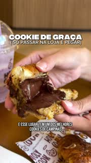
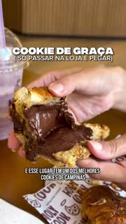
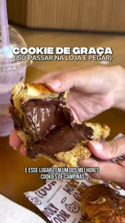
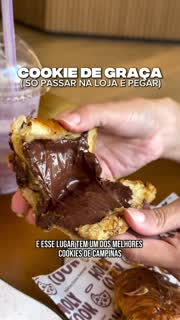
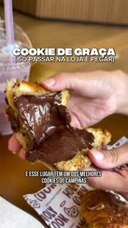
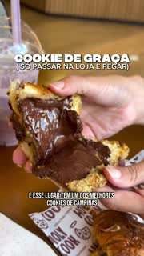
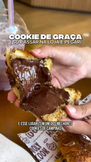
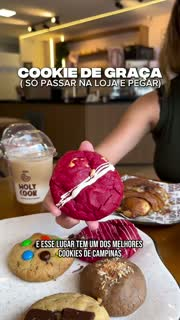
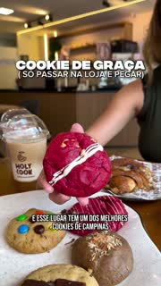
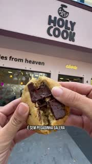
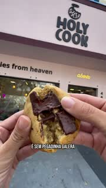
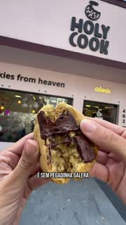
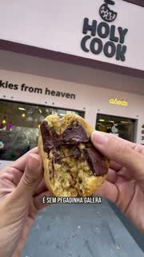
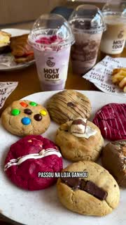
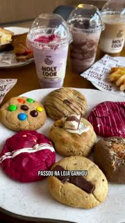
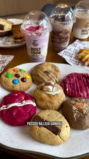
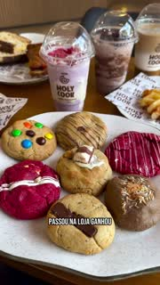
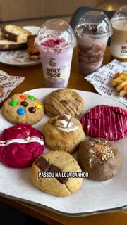
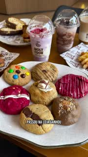
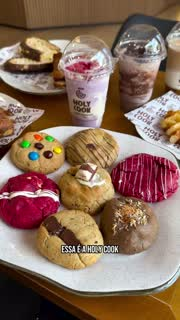
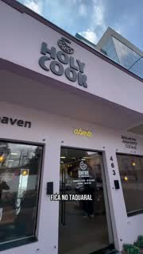
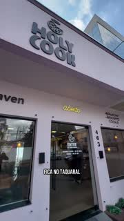
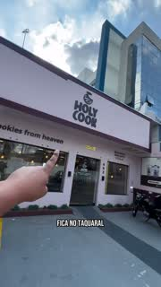
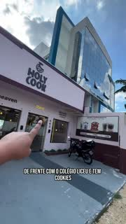
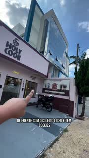
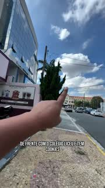
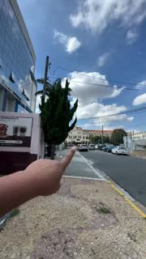
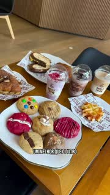
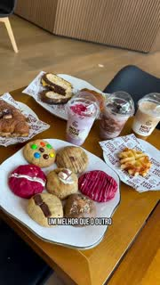
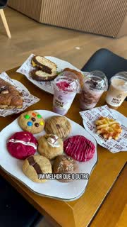
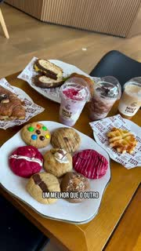
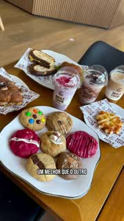
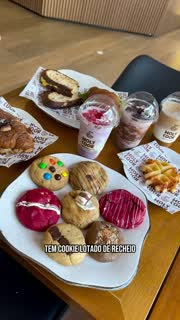
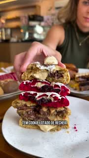
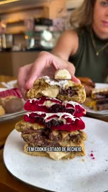
Em ordem de importância. É o resumo executável de tudo que está nas outras abas — se der para copiar só cinco coisas, copie as cinco primeiras.
Os mesmos 19 planos, na mesma ordem e com a mesma duração, trocando o que é de Campinas pelo que é de Paulínia. Quatro planos precisam de decisão antes da gravação — estão marcados em vermelho. Clique numa caixinha.
Mesmo plano, dentro da loja de Paulínia: prato branco com 6 cookies empurrado pra lente, pessoa desfocada atrás.
O letreiro COOKIE DE GRAÇA / ( SÓ PASSAR NA LOJA E PEGAR ) já no frame 1.
Close de um cookie partido, recheio à mostra. Escolher o sabor que abre mais bonito, não o que vai ser dado.
Cookie de cor forte (red velvet ou equivalente) erguido, copo Holy Cook atrás, descendo até a bancada.
Letreiro sai no corte pro plano 4.
Quem estiver na gravação em frente ao balcão: um estende o cookie quase na lente, o outro sorri ao lado.
Único plano de rosto até aqui. 1,4 s, não mais.
Cookie partido na mão com a fachada da loja da Av. José Paulino ocupando o topo do quadro.
Prato de cookies + bebidas em copo da marca + um salgado, de cima em diagonal, orbitando.
A loja de fora, contra-plongée, com céu. Gravar em dia claro — o modelo tem céu azul e isso carrega o plano.
Panorâmica única de 3,6 s: dedo apontando a loja, câmera vira pra direita até enquadrar a referência da rua.
Mesma mesa, câmera mais alta, prato em primeiro plano.
4 cookies empilhados com os recheios à mostra; alguém desfocado atrás encaixando o último.
O plano-uau. Vale montar com cuidado — é o único momento de construção.
Duas mãos abrindo o croissant de cookie sobre o papel da marca.
O produto ou a oferta do mês, em folheto ou na bancada, folheado na frente do painel da loja. 3,1 s.
Corta e volta pro mesmo objeto, agora inteiro e mais perto. 1,7 s.
Corte de reforço sobre o mesmo objeto — não precisa de cenário novo.
Prato com o salgado cortado segurado na frente da câmera, pessoa sorrindo desfocada atrás.
Mesmo enquadramento do 14, outra pessoa, dois milkshakes.
Rima com o plano anterior. Manter o mesmo enquadramento é o ponto.
Duas mãos rasgando um cookie na vertical, puxando o recheio. É onde entra o CTA.
Câmera na altura da mesa, copos enfileirados em profundidade, deslizando pra frente.
Respiro antes da data.
Plano de cima da mesa inteira, orbitando. Cartela grande: DIAS 11 E 12 SETEMBRO, digitando.
2,6 s. Nada mais na tela.
Balcão com o cardápio, a mão virando as páginas. Acaba aqui, sem cartela final, sem logo.
O vídeo tem 37,8 s e não explica a promoção. Quem explica é a legenda — e é lá que estão as condições que o balcão vai ter que fazer valer. Esta é a legenda original do post de Campinas, na íntegra:
O briefing pede uma página de indicação da cidade + dois influenciadores. Os nomes nunca tinham sido levantados. Esta lista saiu de três buscas cruzadas:
Onze criadores marcaram @holycook.paulinia em posts próprios entre dezembro de 2025 e abril de 2026. Todos os onze postaram alguma coisa nos últimos sete dias — a lista está viva. Estão em ordem de views por seguidor.
Postou sobre a loja em 11/12/2025 — ver o post, 3.164 views.
O melhor número da lista inteira: 2,65 views por seguidor e 11% de likes sobre seguidor. Perfil pequeno com audiência que assiste de verdade — é o oposto de comprar alcance.
Postou sobre a loja em 20/03/2026 — ver o post, 5.226 views.
A maior notoriedade local da lista — Rainha da Festa do Peão de Paulínia 2025 é reconhecimento de cidade, não de nicho. Mediana de 7.921 views e um reel de 292 mil.
Postou sobre a loja em 28/01/2026 — ver o post, 1.364 views.
1,46 view por seguidor e um reel que bateu 2,5 milhões. Perfil que já provou que consegue estourar — o risco é o conteúdo dela não estar amarrado em Paulínia.
Postou sobre a loja em 25/03/2026 — ver o post, 2.970 views.
O maior perfil entre quem já postou sobre a loja, mas o menos eficiente: 0,21 view por seguidor. Alcance de base, não de entrega.
Postou sobre a loja em 27/02/2026 — ver o post, 3.582 views.
1,5 view por seguidor com só 1.737 seguidores. Postou dois dias seguidos sobre a loja em fevereiro — é quem mais se engajou com a marca por conta própria.
Postou sobre a loja em 12/03/2026 — ver o post, 3.589 views.
Entrega consistente e sem picos: entre 2,5 e 3,1 mil views. Previsível é uma qualidade quando a campanha tem data fixa.
Postou sobre a loja em 27/01/2026 — ver o post, 3.020 views.
Exatamente 1,0 view por seguidor. Perfil pequeno, ativo e ligado no circuito da Festa do Peão, igual à Camila.
Postou sobre a loja em 15/01/2026 — ver o post, 3.954 views.
8 mil seguidores mas só 0,3 view por seguidor e 20 likes de mediana. O reel da loja (3.954) rendeu mais que a média dela.
Postou sobre a loja em 26/03/2026 — ver o post, 3.022 views.
Mediana baixa (1.857) com um pico de 69 mil. É perfil de UGC — o forte dela é entregar material de produção, não alcance próprio.
Postou sobre a loja em 21/04/2026 — ver o post, 779 views.
Se posiciona como UGC, não como mídia: entrega vídeo pra marca postar. Mediana de 884 views e o post da loja fez 779 — não contrate por alcance.
Postou sobre a loja em 12/02/2026 — ver o post (carrossel, sem contagem de views).
Mediana de 292 views. Além do alcance baixo, nutricionista divulgando cookie de graça é um encaixe que trabalha contra os dois lados.
É daqui que sai a “página de indicação da cidade” do briefing. Duas coisas para reparar: as páginas grandes de Paulínia são de notícia, não de comida; e a única que é de comida (@comendoporpaulinia) é a menor de todas em seguidores — e a melhor em entrega.
É o análogo direto do @comendoporcampinas que fez o vídeo-modelo: mesmo formato, mesmo tipo de post, mesma promessa. 1,8 view por seguidor e 7,2% de likes — o melhor engajamento entre as páginas. O que ele não tem é tamanho: 1.733 seguidores contra 552 mil do de Campinas.
A maior mediana de views de Paulínia: 9.677. É página de notícia com rosto, não de gastronomia — o post entra como pauta da cidade, não como recomendação de comida.
O maior perfil da cidade em seguidores (72.716) e mediana de 6.515 views. Perfil de utilidade pública — alcance largo, intenção fria.
Mediana de 6.491 views com 37,6 mil seguidores. Publica muito e rápido — bom pra avisar a cidade na véspera.
40 mil seguidores mas só 0,08 view por seguidor. Entrega abaixo do tamanho — o número de seguidores engana aqui.
9 mil seguidores, mas não posta reel — só foto e card. Não serve para uma campanha que depende de vídeo.
Alcance pequeno (mediana de 932), mas é o único público segmentado da lista — mãe com criança é exatamente quem entra numa loja de cookie no sábado.
2,78 views por seguidor, o melhor índice de todos — mas o último post é de julho de 2025. Perfil parado; não conte com ele.
O vídeo é exclusivo da loja de Paulínia. Estes quatro perfis têm alcance muito maior que qualquer um da cidade, mas a audiência deles é de Campinas e Indaiatuba — e Campinas já tem loja própria. Estão listados para que a decisão de usá-los, se for tomada, seja tomada de propósito.
Mediana de 94.159 views — 10x qualquer perfil de Paulínia. Mas a audiência é de Campinas, onde a loja já existe, e a campanha é exclusiva de Paulínia. Só entra se a decisão for aceitar pagar alcance que em boa parte não vai atravessar os 25 km.
216 mil seguidores e mediana de 14.868 views, mas 3 likes de mediana — o engajamento não acompanha o alcance. Mesmo problema de praça do anterior.
Diz cobrir Campinas e região e apareceu na hashtag #dicaspaulinia. Mediana de 11.645 views com 37 mil seguidores. É o mais defensável dos três de fora — vale confirmar quanto do público dele é de Paulínia antes.
Mediana de 10.950. Está aqui só para mostrar que a rede “Comendo por” funciona bem em cidade média — não serve pra Paulínia, a 40 km.
Quem estiver na loja na sexta 11 e no sábado 12 concorre a um combo da casa pelo melhor stories. É a terceira camada da campanha: o cookie paga a visita de hoje, o voucher paga a de amanhã, e o sorteio é o que faz o story sair melhor do que sairia.
O display precisa mostrar o combo — foto do que a pessoa leva se ganhar — e a frase que explica em uma linha o que ela tem que fazer. Fica no balcão, na altura do olho de quem está pagando, não na parede.
É o mesmo story da mecânica principal — não é uma postagem a mais. A pessoa já ia postar pra levar o cookie; o sorteio só muda o capricho.
Story some em 24 horas. Se ninguém salvar, não há o que julgar no dia seguinte.
É o item que trava a produção do display, que trava a gráfica, que trava a data. Os custos de referência (CMV de 30–31/07/2026, da campanha de fidelização) para montar as contas:
| Item | CMV | Preço de tabela |
|---|---|---|
| Cookie (médio) | R$ 5,01 | ~R$ 12,90 |
| Bola de sorvete | R$ 2,00 | R$ 5,90 |
| Fatia da Torta Perfeita | R$ 9,04 | R$ 22,90 |
| Milkshake (440 ml) | R$ 13,20 | R$ 28,66 |
Um combo tem que parecer grande na foto — é a única função dele. Cookie + milkshake custa R$ 18,21 de CMV e aparenta R$ 41,56 de tabela: é a melhor relação entre o que se vê e o que se paga.
Três decisões, e as três precisam estar escritas antes, porque prêmio subjetivo entregue sem critério é o tipo de coisa que volta em comentário:
O combo e o display saem dos R$ 5 mil da campanha, junto com os cookies e o cachê dos influenciadores. Como o rateio da verba ainda não foi feito, este item entra na mesma conta que está em aberto no briefing.
Em dinheiro o combo é barato — um ou dois combos não movem a verba. O display é que custa, e custa em prazo, não em real.
Todo mundo que participar nos dias 11 e 12 sai da loja com um voucher pra voltar outro dia e ganhar um benefício. Mesma ideia da campanha de fidelização por visitas, aplicada a um público que chegou por outra porta. Qual é o benefício ainda não foi escolhido.
As quatro opções que respeitam a regra do compre-e-ganhe, com o custo real de cada uma. Todas exigem uma compra — é isso que separa presente de promoção.
O brinde mais barato da lista com folga. A visita que resgata este voucher ainda rende quase o mesmo que uma visita normal. O prêmio percebido é o menor — é presente pequeno, o que combina com quem chegou por um grátis e ainda não comprou nada.
Prêmio inteiro num item que 92% dos pedidos da loja não levam. É o que faz a pessoa descobrir que a casa tem torta — e resolve a armadilha de dar cookie pra quem acabou de ganhar cookie.
O maior prêmio percebido e o mais caro de entregar — só existe copo de 440 ml, então não dá pra fazer versão menor. Num voucher que vai pra todo mundo que passou nos dois dias, R$ 13,20 por resgate é o cenário que mais pesa se a fila for grande.
Em qualquer outra campanha é a melhor escolha: o cookie pago cobre o de brinde e sobra, e ninguém precisa entender regra nenhuma. Nesta campanha ele repete o prêmio que a pessoa acabou de ganhar de graça — e é justamente o que ensina o cliente a esperar cookie de graça.
Entre as quatro, as duas que não repetem o cookie são a bola de sorvete (mais barata, prêmio pequeno) e a fatia de torta (mais cara, revela produto que quase ninguém pede). A escolha é entre proteger margem e usar o voucher pra apresentar a casa.
Dois caminhos, e eles custam coisas diferentes:
A campanha de fidelização tem uma escada de três visitas para cliente novo. Quem vem pelo Cookie de Graça é, em boa parte, cliente novo — então a pergunta é inevitável:
Esta é a decisão mais cara desta aba, e é a única que não dá pra tomar no dia 10 — depende do sistema estar pronto.
O custo do voucher não está dentro dos R$ 5 mil — ele cai no mês seguinte, quando as pessoas voltarem. Ordem de grandeza, supondo que a campanha entregue 500 vouchers:
| Benefício | CMV unit. | se 20% voltarem | se 40% voltarem |
|---|---|---|---|
| Bola de sorvete | R$ 2,00 | R$ 200 | R$ 400 |
| Cookie | R$ 5,01 | R$ 501 | R$ 1.002 |
| Fatia de torta | R$ 9,04 | R$ 904 | R$ 1.808 |
| Milkshake | R$ 13,20 | R$ 1.320 | R$ 2.640 |
São ilustração, não previsão: nem o número de vouchers nem a taxa de retorno estão estimados. Serve pra mostrar que a diferença entre a opção mais barata e a mais cara é da ordem de R$ 2 mil — comparável à própria verba da campanha.